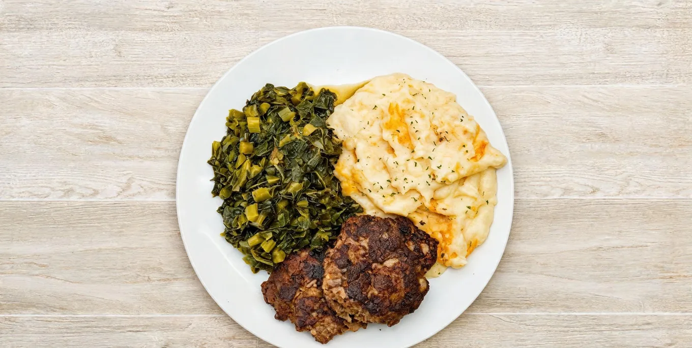

Short answer: Bayou Fork Kitchen serves soul food, Southern comfort plates, and Cajun and Creole favorites at 10600 Fondren Road in Southwest Houston. The menu runs from meatloaf, fried pork chops and slow-cooked sides to gumbo, crawfish étouffée, shrimp and grits, po-boys and seafood platters.
Soul food and Louisiana cooking share a lot of the same table: patient seasoning, familiar ingredients, generous plates and sides that matter as much as the main dish. At Bayou Fork, those traditions meet in one neighborhood kitchen with a drive-thru, pickup and delivery.
Southern comfort plates on Fondren Road
If you are craving a classic plate, start with the meatloaf served with collard greens and mashed potatoes, or the fried pork chop with a side such as dirty rice, baked beans, macaroni and cheese or candied yams. Red beans and sausage over rice is another comforting choice when you want something slow-cooked and filling.
The sides are not an afterthought. Choose from baked macaroni and cheese, slow-cooked greens, green beans, corn, mashed potatoes, dirty rice, fries, baked beans or a vegetable medley. Every platter includes one side, and individual sides are available in medium or large portions.
Creole and Cajun favorites
For Louisiana flavor, try a dark-roux gumbo, crawfish étouffée, shrimp and grits, or the creamy Mardi Gras Pasta. Fried and grilled seafood platters add catfish and shrimp to the mix, while the fried shrimp po-boy puts crispy shrimp on toasted French bread.
Cajun and Creole are related, but they are not identical. Our menu pulls from both traditions and pairs them with Southern comfort food. If you want the deeper history, read our guide to the difference between Cajun and Creole food.
What should you order first?
- For a homestyle plate: meatloaf with greens and mashed potatoes.
- For something fried: the fried pork chop, fried catfish and shrimp, or a fried shrimp po-boy.
- For a Louisiana classic: gumbo or crawfish étouffée with dirty rice.
- For creamy comfort: shrimp and grits, Mardi Gras Pasta or Catfish Bienville.
- For breakfast: chicken and waffles, the Bayou Breakfast, breakfast tacos or shrimp and grits from 6:30am.
Soul food near Brays Oaks, Westbury and Meyerland
Bayou Fork Kitchen is on Fondren Road between South Braeswood Boulevard and West Bellfort, close to Brays Oaks, Westbury, Meyerland, Sharpstown and Hillcroft. The kitchen is open Monday through Saturday from 6:30am to 7:30pm and closed Sunday.
Order at the drive-thru, place a pickup or delivery order through DoorDash, or ask about family meals and catering. Bayou Fork is rated 5.0 on Google with 46 five-star reviews as of October 20, 2026.